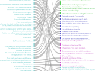

Philippe Gambette
Demos of projects to which I have contributed
Year
Project
Demo
Overview
2016-2022
intertextFinder
Search of common 4-grams between a text and a corpus
2020-2022
ABA
, with Jonathan Poinhos (main developer) and Eleni Kogkitsidou
Normalize the spelling of 17th century French texts
2021-2022
Nom d'une plaque
Find streets named after people in France
2020-2022
Hyperpièces
, with Celine (main data contributor) and Aaron Boussidan
Explore a dataset built by Céline Fournial about the sources of classical French theater
2020-2022
wikidataMultiSearch
Search a list of words in Wikidata to get the values of several of their Wikidata properties
2020
visuLexique
Evolution of the presence of the words about cities across the
Memoirs
by Marguerite de Valois.
2019
Using CollateX
Using Collatex on 15 versions of short story 65 from
Heptaméron
by Marguerite de Navarre
2019
sankeyCompare
Comparison with a Sankey diagram of the 1558 Boaistuau and the 1559 Gruget versions of
Heptaméron
by Marguerite de Navarre

2019-2022
pairwiseMedite
Pairwise comparisons, each built with MEDITE, of 15 versions of short story 65 from
Heptaméron
by Marguerite de Navarre
2017
ijuv
Dissimilation of u/v and i/j in an ocerized version of
Tragedie Francaise du Sacrifice d'Abraham
by Théodore de Bèze
2008-2022
TreeCloud
, with Jean-Charles Bontemps (main developer), Jean Véronis, Claude Martineau, S Deepak Srinivas
A Textometrical Approach to Study the Transmission of Biological Knowledge in the XIX
th
Century
(with Nadège Lechevrel)